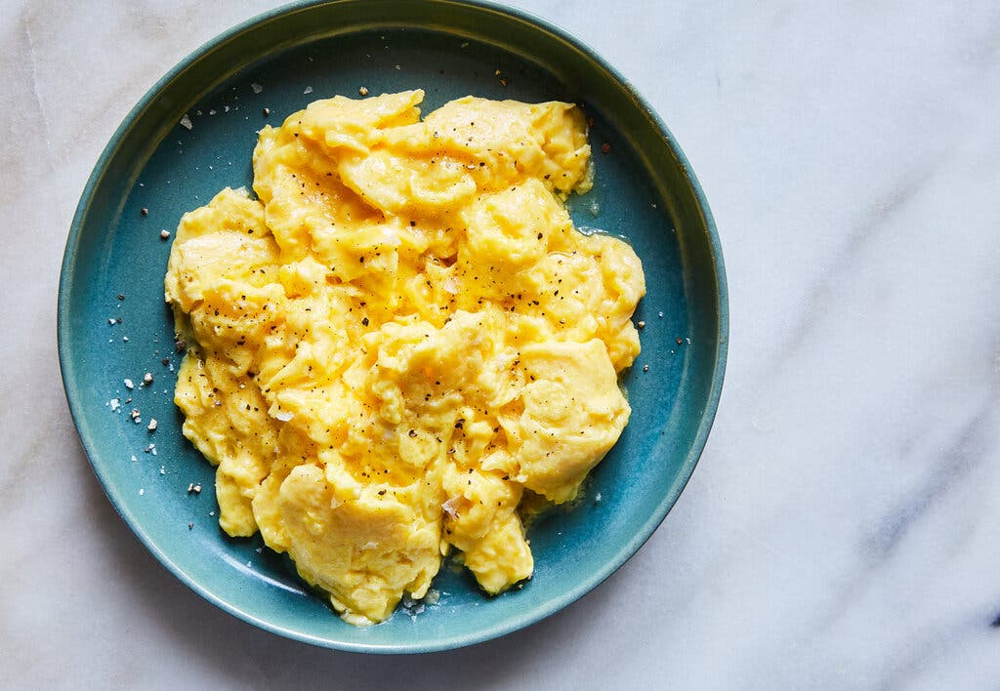

The Perfect Scrambled Eggs Recipe

Eggs, light and Fluffy
Everyone can make scrambled eggs, but can everyone craft the perfect plate? By following this recipe, you will be able to create a plate of eggs that makes Gordan Ramsey go, "Wow, these are the best damn eggs I have ever eaten!". This recipe will lay out the ingredients and instructions so you can get crackin (those eggs).
Ingredients
- 2 eggs
- Butter
- Salt
- Pepper
Steps
- Place pan on stove on medium heat.
- Place 1 Tbsp of butter on pan and let melt.
- Crack both eggs into a separate bowl and whisk until completely orange. There should be no air bubbles left.
- Pour eggs onto pan. Continually stir the eggs until golden, occasionally taking the eggs off of the heat for a few moments.
- Salt and Pepper your eggs appropriately.
- Finished!